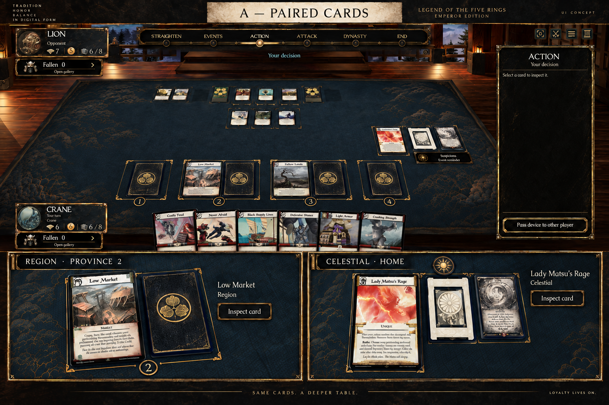
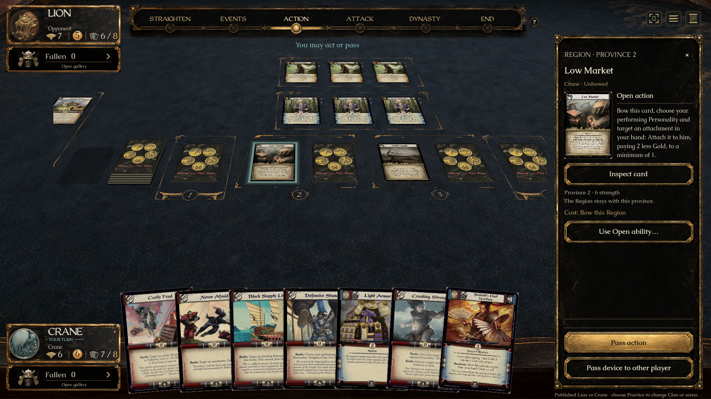
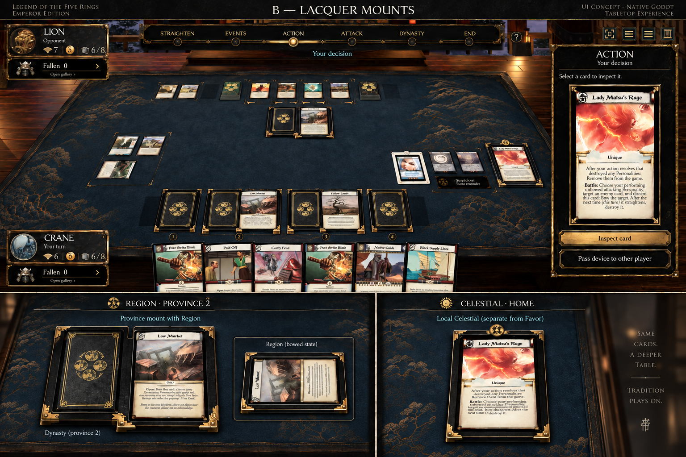
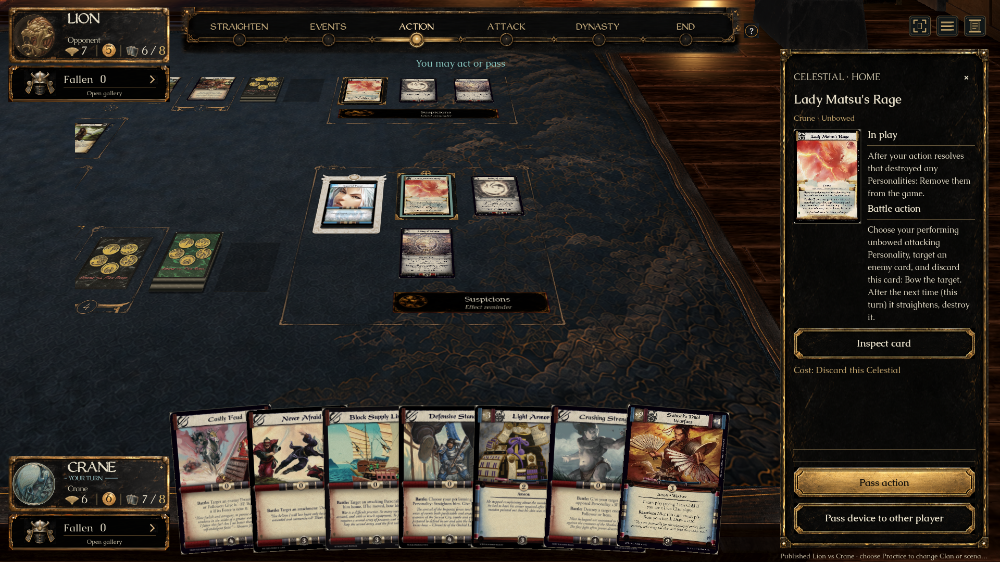
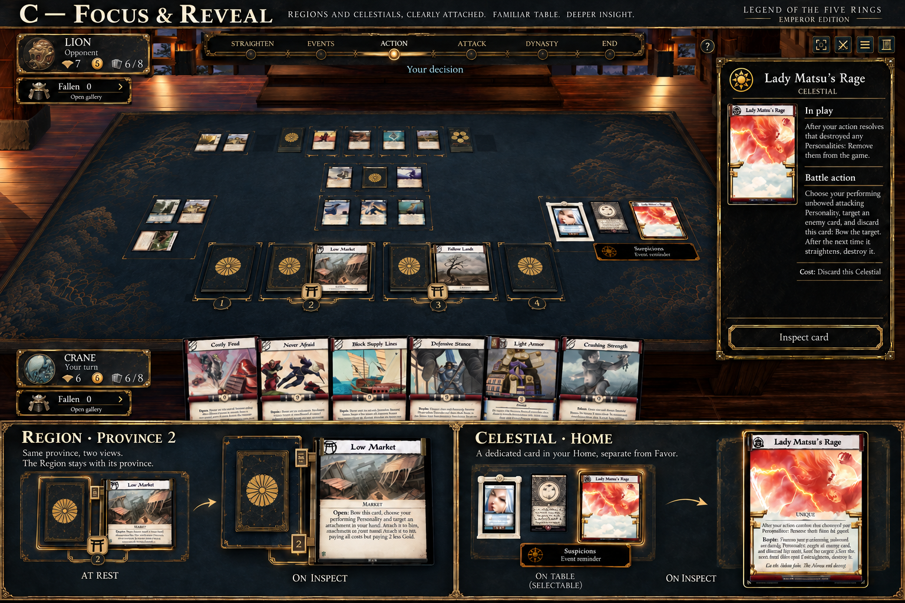
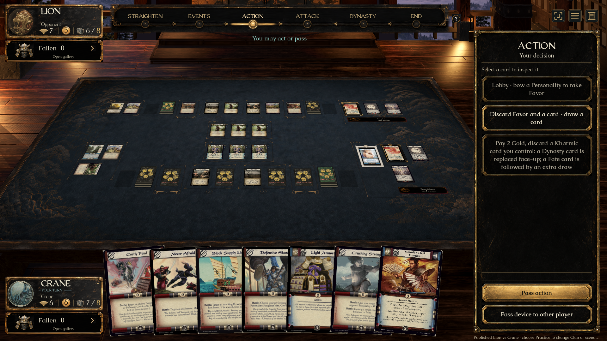

A’s Region layout + B’s Celestial frame + C’s inspection behavior. These are viewports into unchanged source and Godot captures, shown at matching component widths. Open any full image to inspect it at its original resolution.
A’s left Region and right Dynasty card share one thin province boundary; native cards bow independently.


The production frame uses black lacquer, stepped brass corners and a round top medallion. Original card face remains complete.


Small original portrait, separate in-play and ability text, explicit cost and full-card inspection. Text comes from the pinned card definition.

The Region border reuses A’s ornamental pixels and the existing numbered seal. The Celestial sprite was derived from B in two imagegen passes; the second corrected rounded plates to angular brackets. Its lacquer grain and small ornament details are derived artwork, not an exact pixel extraction. Native perspective, lighting, full printed scans, live state and the existing HUD are preserved, so this is not a claim of whole-screen pixel equivalence.
Full A · Full B · Full C · Full-card inspection
